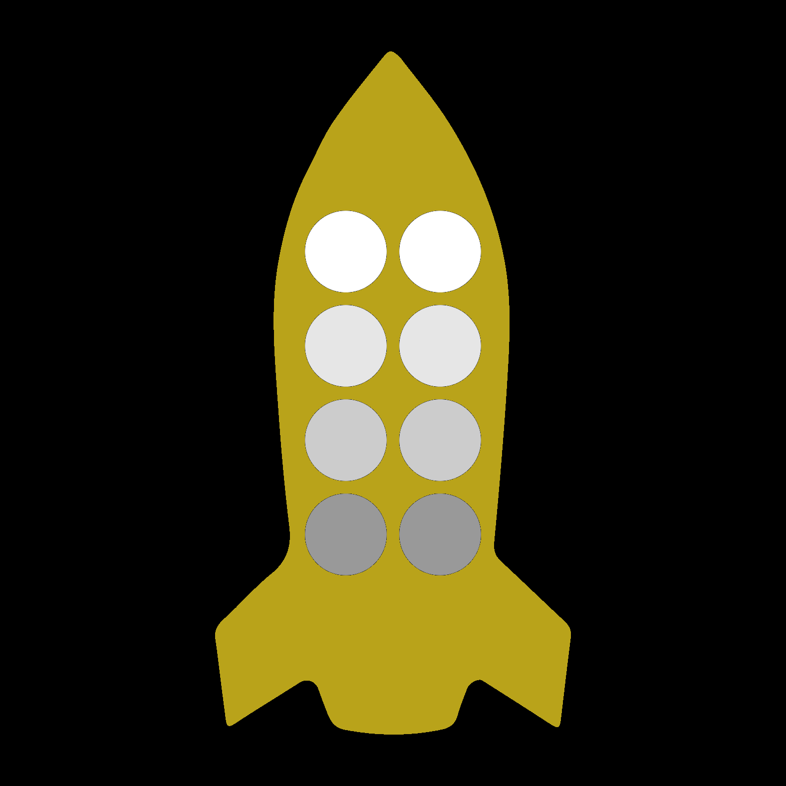
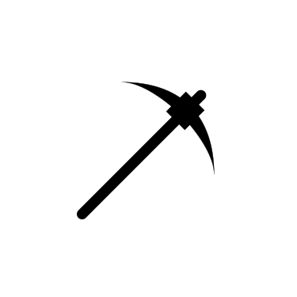
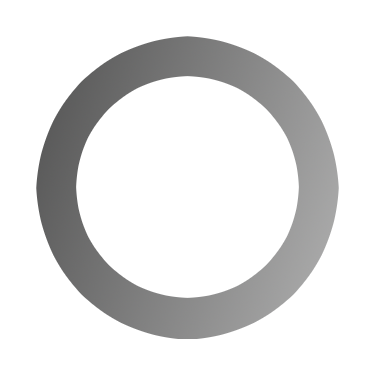
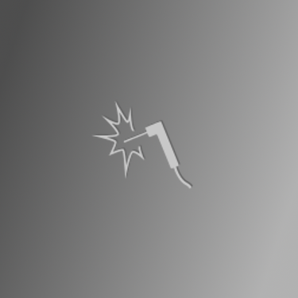

Populations have grown beyond the capacity of the home planet; it is time to expand into the rest of the solar system. You have the technology, but lack the necesarry resources to build orbital colonies. Unfortunately pirates lurk in the outer ring, and venture into the inner orbits, preying one those they cat catch. You must venture forth into the solar system, gather the necesarry resources, and construct new homes for your people, while defending yourself and your allies from the pirates. . .
Trajectory is a cooperative game, meaning either everyone wins, or everyone loses.
Objective
Work together to collect and transport critical resources in order to construct a orbital colonies while defending the solar system against pirates.
Parts
One Game Board
Six Planets
Metal: Home: Heluim(x2): Ice(x2):
Six Rocket Ships with corresponding ship mats

Nine ship class markers (with one of three class indicator on each side)
Miner:  Interceptor: Engineer:
Six Pirate Tokens
Eighteen Action Tokens
One Draw Bag
Seventy Fuel Tokens
Thirty-Six Resource Tokens (12 of each type)
metal
helium
ice
Six colony provision tokens
Eight Storage Rings

Five fuel/refit ring upgrade tokens
front (fuel station) back (refit station) 
Three habitat ring upgrade tokens
Setup
Place the six planets at random locations within in their respective orbits: metal planet (red) in the innermost orbit, home planet (earthlike) in the second orbit, helium planets (gas giants) in the third orbit, and ice planets in the outermont orbit.
Place all of the player's ships in orbit around (on the same space as) the home planet.
Place a storage ring in orbit in orbit around the home planet.
Have each player close their eyes and choose a random resource token and place it on one of the spaces on their ship mat.
Fuel up the ships by filling all of the remaining spots on each player's ship mat with fuel tokens.
Place all of the action tokens and pirate tokens in the draw bag.
Rounds
A round of play consists of the following:
Pirate turn: move each pirate piece or harvest pirate resources as described in the 'Pirate Turn' section.
Player turns: each player takes a turn as described in the 'Player Turns' section.
Orbit: move all ships, planets, stations, and pirates counter clockwise one space.
Recycle tokens: Return any spent action tokens or destroyed pirates to the draw bag.
Player Turns
Each player, on their turn takes the following steps:
Draw a token from the draw bag. If it is a pirate token place it on the board on the pirate start space closest to where you are sitting. If it is an action token, keep it until you wish to use it to perform a special action (you may save it for a later turn if you like).
Do any or all of the following:
Refit your ship: When at the home planet or a refit station, you may change the class of your ship. Available classs are miner, interceptor, engineer, or heavy lift. To re-outfit as a miner, interceptor, or engineer, place the appropriate class marker on your ship mat (removing the previous one). To re-outfit as a heavy lift, flip your ship card over so that it shows the side with eight additional fuel/cargo slots.
Re-fuel your ship (when at the home planet or fuel station).
Move your ship (once per turn)
Trade:
Exchange fuel, cards, or resources with other ships on the same space.
Move fuel or cargo to or from a storage ring on the same space.
Load colony provisions onto your ship (if at the home planet).
Deliver colony provisions to an orbital colony on the same space.
Perform special actions specific to your ship's class (one per action token)
Ship movement
Each ship may move one space per turn (except interceptors and heavy lift by special action).
Fuel costs are as follows:
Changing orbits, arriving at a space with no planet - 1/2 of your total carried mass (fuel + cargo units currently on board your ship)
Changing orbits, arriving at a planet - 1/4 of your total carried mass
Changing orbits, departing from an acceleration ring - 1/4 of your total carried mass
Changing orbits, departing from an acceleration ring and arriving at a planet - 1/8 of your total carried mass.
Moving within the same orbit)- 1 fuel unit
When computing fuel costs, always round any fractional result to the nearest whole number (but movement aways costs at least one fuel unit).
If you have too much cargo to move with your remaining fuel, you will need to dump some of it (in which case it is lost) or transfer it to another ship or storage ring on the same space and move without it.
Special actions
You may perform as many special actions as you like on your turn, provided you have a token to spend for each action. When performing a special action, place the action token in the middle of the board to be collected and returned to the draw bag at the end of the round.
Mining ship:
Extract resources from the planet you are orbiting. One resource per action token
metal
can be found at the planet in the innermost ring.
helium
can be found at the planets in the third ring.
ice
can be found at the planets in the outermost ring.
Interceptor:
Destroy a pirate on the same space.
Move an extra space
Engineer:
Build one of the following on the space your ship occupies, as long as it does not already have a ring or other station:
Pirate trap. Cost:
helium
Storage ring. Cost:
metal
Accelerator ring. Cost:
metal
+
helium
Fuel station. Cost:
metal
+
helium
+
helium
Refit station. Cost:
metal
+
helium
+
ice
Orbital Habitat: Cost:
metal
+
helium
+
ice
+
ice
Upgrade a storage ring to any other station type. Cost is same as above minus the metal (e.g. upgrade a ring to a fuel station for 2 helium).
Disassemble any constructed station and recover the metal
Refit any ship on the same space (including your own)
Heavy lift:
Heavy lift ships have 2X the carrying capacity of other ships.
Boost a ring or station with you as you move for an additional cost of 3 fuel units (on top of your normal ship movement cost. Storage rings must be empty to boost. Your ship may not re-fuel on the same turn.
Move an extra space
Pirates
Adding
When a pirate token is drawn, place it on the board at the pirate start point on the outermost orbit closest to where the player who drew it is sitting.
Moving
Pirates move one space per round closer to their target orbit (denoted by the color shown on the token). Once they reach their target orbit, they move towards the nearest player ship, or planet. Given two equally close targets, the pirate will move in the orbital direction.
If a pirate moves onto a space containing a players ship, it immediately captures any resources the player is carying (place them in the pirate resource pile). The pirate also removes all fuel from the player's ship, stranding it until help can arrive. Pirates ignore disabled/empty player ships during movement.
Pillaging
When a pirate ends its turn in orbit around a planet, it will harvest a resource from the planet. The harvested resource is placed in the pirate resource pile. When a pirate ends its turn on the same space as a player's ship, it captures all of the resources from that ship and empties the fuel tanks, leaving the ship stranded.
Winning or Losing
To win the game, you must construct enough orbital colonies to meet the expansion needs of your population. Once constructed, colony provisions from the home planet must be delivered to a colony to make it ready to be inhabited. The number of colonies you must construct depends on the difficulty you have chosen.
Winning
The game is won as soon as the players construct the requisite number of habitats:
Easy: Successfully construct and provision one orbital habitat.
Normal: Successfully construct and provision two orbital habitats.
Hard: Successfully construct and provision three orbital habitats.
Losing
The game is lost if the pirates collect too many resources
Easy: Pirates collect ten resource tokens.
Normal: Pirates collect eight resource tokens..
Hard: Pirates collect six resource tokens..
Creative Commons Artwork Credits from the Noun Project
Rocket by Gem.icons (used in logo, ship cards)
Welding torch by Mac Cormier (used in engineer class indicator)
Competitive Mode
In competitive mode, it's each player for themselves. Movement and build costs are the same as in the cooperative mode, however refueling is not free, and instead of refitting your ship, you upgrade it with new capabilities. You earn credits for harvesting resources and returning them to the home planet or an orbital colony, destroying pirates, or by selling resources or service to other players.
Refuel and upgrade costs:
Fuel: 1 credit per fuel token
Add Mining capability: 8 credits
Add Engineering capability: 12 credits
Add Interceptor capability: 8 credits
Add Heavy Boost capability: 8 credits
Earning Credits
Each time you return a resource to the home planet or to an orbital colony, you can exchange it for credits at the following rates
Metal: 8 credits
Helium: 12 credits
Ice: 24 credits
For each pirate that you destroy, you immediately collect a bounty of 8 credits
When you construct a station that provides services, for example a fuel station, other players who use your station pay you for the service instead of paying "the bank" like they do at the home planet. You get to keep half as profit, and the other half is lost as the cost of providing the service.